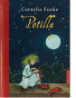

Arthur traut seinen Augen nicht. In dem schmutzigen Strumpf, den er im Wald gefunden hat, steckt jemand Lebendiges! Potilla, die Feenkonigin, ist nur puppengro? und elfenzart, doch als sie wieder bei Sinnen ist, hat sie sogleich einen Auftrag fur Arthur. Ihr Volk ist uberfallen worden und der Dieb hat samtliche Feenmutzen gestohlen. Jetzt konnen die Feen nicht in ihr Reich zuruck. Arthur soll ihr helfen, die Mutzen wieder zuruckzuholen, und von nun an hat er keine ruhige Minute mehr...